Modelling the air sources with HYSPLIT
Contents
Modelling the air sources with HYSPLIT¶
Preamble¶
Imports¶
import shutil
import shapely
import pysplit
import warnings
import numpy as np
import pandas as pd
import plotnine as p9
import geopandas as gpd
from glob import glob
from itertools import product
from mizani.breaks import date_breaks
from shapely.geometry import LineString
from mizani.formatters import date_format, custom_format
Presets¶
p9.options.set_option('dpi', 200)
p9.options.set_option('figure_size', (4, 3))
p9.options.set_option('base_family', 'Bitstream Vera Serif')
p9.theme_set(p9.theme_bw() + p9.theme(axis_text=p9.element_text(size=7),
axis_title=p9.element_text(size=9)))
# Not advisable, but in this case the warnings become too much.
warnings.filterwarnings("ignore")
# negative log function for ease of plotting later
def negative_log(x):
return np.sign(x) * np.log10(np.abs(x))
Loading data¶
shape_url = "https://naturalearth.s3.amazonaws.com/50m_cultural/ne_50m_admin_0_countries.zip"
world = gpd.read_file(shape_url)
metals = pd.read_csv('../data/long_metals.csv', index_col=0)
HYSPLIT_DIR = '/home/afontal/utils/hysplit/exec/hyts_std'
HYSPLIT_WORKING = '/home/afontal/utils/hysplit/working'
METEO_DIR = '/home/afontal/utils/hysplit/meteo/gdas1'
OUT_DIR = '/home/afontal/projects/kd_subweekly_cycle/output/trajectories'
Trajectories¶
Kumamoto (Mar-Apr 2011)¶
pysplit.generate_bulktraj('kumamoto',
hysplit_working=HYSPLIT_WORKING,
hysplit=HYSPLIT_DIR,
output_dir=f'{OUT_DIR}/kumamoto',
meteo_dir=METEO_DIR,
years=[2011],
months=[3, 4],
meteoyr_2digits=True,
hours=[0, 6, 12, 18],
altitudes=[10],
coordinates=(32.80589, 130.69181),
run=-96,
meteo_bookends=([4, 5], [])
)
all_trajs = pysplit.make_trajectorygroup(glob(f'{OUT_DIR}/kumamoto/*'))
all_trajectories_data = (pd.concat([t.data.assign(traj_id=i) for i, t in enumerate(all_trajs)])
.drop(columns=['Temperature_C', 'Temperature', 'Mixing_Depth'])
.assign(start_time=lambda dd: dd.DateTime - pd.to_timedelta(dd.Timestep, unit='h'))
.assign(date=lambda dd: pd.to_datetime(dd.start_time.dt.date))
)
trajectory_lines = (all_trajectories_data
.groupby(['traj_id', 'start_time'], as_index=False)
['geometry']
.apply(lambda x: LineString([(i.x, i.y) for i in x.to_list()]))
.assign(date=lambda dd: pd.to_datetime(dd.start_time.dt.date))
.assign(hour=lambda dd: dd.start_time.dt.hour)
)
(all_trajectories_data
.loc[lambda dd: dd.date == '2011-03-10']
.pipe(lambda dd: p9.ggplot(dd)
+ p9.geom_map(p9.aes(color='geometry.z', fill='geometry.z'), size=.2)
+ p9.geom_map(world, alpha=.1, size=.1)
+ p9.theme(figure_size=(4, 2.5), title=p9.element_text(size=8), panel_grid=p9.element_blank())
+ p9.labs(title=f'96h backtrajectories on 2011-03-10', fill='Height', color='Height')
+ p9.scale_x_continuous(labels=custom_format('{:0g}°E'), limits=(90, 150))
+ p9.scale_y_continuous(labels=custom_format('{:0g}°N'), limits=(30, 60))
+ p9.scale_fill_continuous(labels=custom_format('{:0g}m'))
+ p9.scale_color_continuous(labels=custom_format('{:0g}m'))
)
)
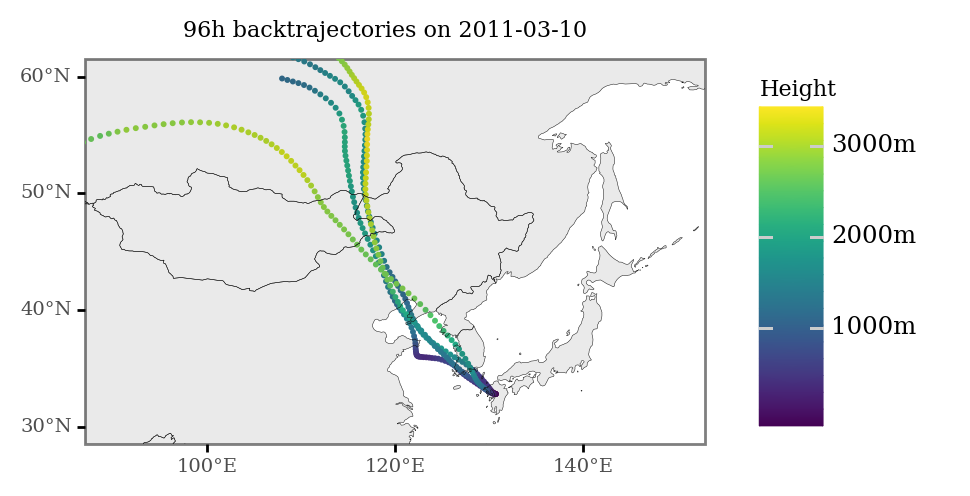
(trajectory_lines
.loc[lambda dd: dd.date == '2011-03-10']
.pipe(lambda dd: p9.ggplot(dd)
+ p9.geom_map()
+ p9.geom_map(world, alpha=.1, size=.1)
+ p9.theme(figure_size=(4, 2.5), title=p9.element_text(size=8), panel_grid=p9.element_blank())
+ p9.labs(title=f'96h backtrajectories on 2011-03-10', fill='Height', color='Height')
+ p9.scale_x_continuous(labels=custom_format('{:0g}°E'), limits=(90, 150))
+ p9.scale_y_continuous(labels=custom_format('{:0g}°N'), limits=(30, 60))
+ p9.scale_fill_continuous(labels=custom_format('{:0g}m'))
+ p9.scale_color_continuous(labels=custom_format('{:0g}m'))
)
)
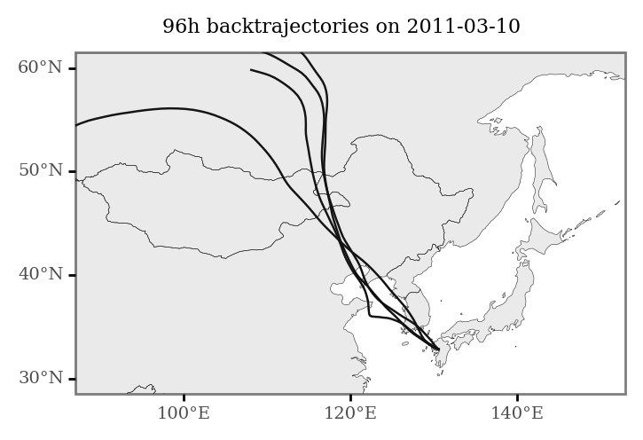
dates = pd.read_excel('../data/streaker_pm25_2011.xlsx').Date
(trajectory_lines
.loc[lambda dd: dd.date.isin(dates)]
.assign(date=lambda dd: dd.date.astype(str))
.pipe(lambda dd: p9.ggplot(dd)
+ p9.geom_map(alpha=.8)
+ p9.annotate(geom='point', size=.2, color='red', y=32.80589, x=130.69181)
+ p9.geom_map(world, alpha=.1, size=.1)
+ p9.theme(figure_size=(16 * .8, 9 * .8),
title=p9.element_text(size=8),
panel_grid=p9.element_blank(),
strip_text=p9.element_text(size=7))
+ p9.labs(title=f'', x='', y='')
+ p9.facet_wrap('date', ncol=7)
+ p9.scale_x_continuous(labels=custom_format('{:0g}°E'), limits=(90, 150))
+ p9.scale_y_continuous(labels=custom_format('{:0g}°N'), limits=(30, 60)))
)
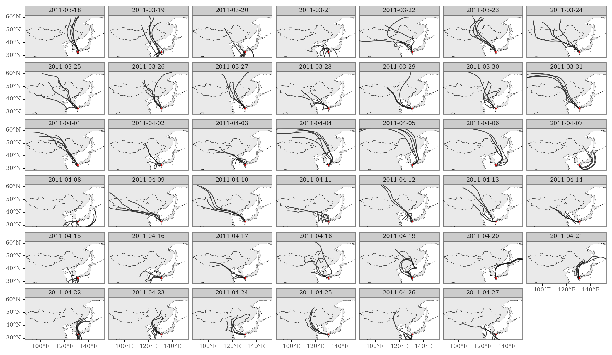
kd_kumamoto = (pd.read_csv('../data/kd_ts.csv', index_col=0)
.assign(date=lambda dd: pd.to_datetime(dd['date']))
)
dates_minima = kd_kumamoto.loc[lambda dd: dd.kd_rolling_4 <= 0].date
dates_maxima = kd_kumamoto.loc[lambda dd: dd.kd_rolling_4 >= 5].date
min_max_trajectories = (trajectory_lines
.loc[trajectory_lines.date.isin(dates_minima)]
.assign(group='Minima')
.append(trajectory_lines
.loc[trajectory_lines.date.isin(dates_maxima)]
.assign(group='Maxima'))
.dropna()
.pipe(gpd.GeoDataFrame)
)
(p9.ggplot(kd_kumamoto)
+ p9.aes('date', 'kd_rolling_4')
+ p9.geom_rect(p9.aes(fill='group', ymin=-np.inf, ymax=np.inf,
xmin='date - pd.to_timedelta("12 h")', xmax='date + pd.to_timedelta("12 h")'),
inherit_aes=False, alpha=.7, data=min_max_trajectories[['date', 'group']].drop_duplicates())
+ p9.geom_line(size=.7)
+ p9.geom_point(size=.5)
+ p9.scale_fill_manual(['#B2182B', '#2166AC'])
+ p9.scale_x_datetime(breaks=date_breaks('2 weeks'))
+ p9.labs(x='', y='KD cases', fill='')
+ p9.theme(figure_size=(6.5, 2), panel_grid=p9.element_blank())
).draw().savefig('../output/figures/kumamoto_kd_minmax.pdf', bbox_inches='tight')
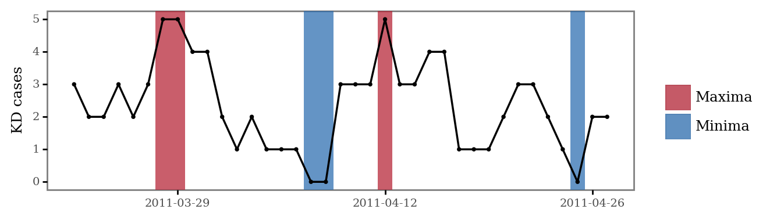
(kd_kumamoto
.melt(['date', 'kd_rolling_4'])
.assign(variable=lambda dd: dd.variable.str[-1].astype(int))
.pipe(lambda dd: p9.ggplot(dd)
+ p9.aes('date', 'value', fill='variable')
+ p9.geom_line(p9.aes(y='kd_rolling_4'))
+ p9.geom_col(alpha=.8)
+ p9.scale_fill_continuous('plasma')
+ p9.scale_x_datetime(breaks=date_breaks('2 weeks'))
+ p9.labs(x='', y='KD cases', fill='Lag')
+ p9.theme(figure_size=(4, 2), legend_key_size=7,
legend_text=p9.element_text(size=6, va='bottom'),
legend_title=p9.element_text(size=8))
)
)
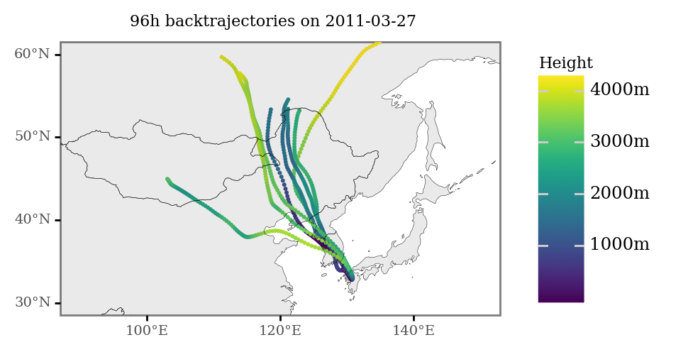
(p9.ggplot(min_max_trajectories)
+ p9.geom_map(p9.aes(color='group', fill='group'), alpha=.8)
+ p9.geom_map(size=.1, alpha=.1, data=world)
+ p9.labs(fill='', color='')
+ p9.scale_fill_manual(['#B2182B', '#2166AC'])
+ p9.scale_color_manual(['#B2182B', '#2166AC'])
+ p9.guides(fill=False, color=False)
+ p9.theme(title=p9.element_text(size=9), panel_grid=p9.element_blank(), figure_size=(3, 2.5))
+ p9.scale_x_continuous(labels=custom_format('{:0g}°E'), limits=(80, 160), breaks=[80, 105, 130, 155])
+ p9.scale_y_continuous(labels=custom_format('{:0g}°N'), limits=(15, 65), breaks=[25, 40, 55])
).draw().savefig('../output/figures/kumamoto_trajectories.pdf', bbox_inches='tight')
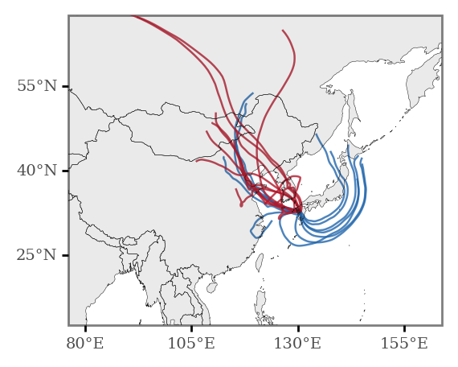
import geopandas
margin = 1
xmin, ymin, xmax, ymax = min_max_trajectories.total_bounds.round() + [-margin, -margin, margin, margin]
n_cells = 60
cell_size = (xmax - xmin) / n_cells
grid_cells = []
for x0 in np.arange(xmin, xmax + cell_size, cell_size ):
for y0 in np.arange(ymin, ymax + cell_size, cell_size):
# bounds
x1 = x0 - cell_size
y1 = y0 + cell_size
grid_cells.append(shapely.geometry.box(x0, y0, x1, y1))
grid = (gpd.GeoDataFrame(grid_cells, columns=['geometry'])
.assign(cell=lambda dd: dd.geometry)
.assign(x=lambda dd: dd.cell.centroid.x, y=lambda dd: dd.cell.centroid.y)
)
x_y_poly = grid[['x', 'y', 'cell']].drop_duplicates()
grid_intersections = gpd.sjoin(min_max_trajectories, grid, op='intersects')
(grid_intersections
.groupby(['x', 'y', 'group'])
.size()
.rename('n')
.reset_index()
.pivot(['x', 'y'], 'group', 'n')
.fillna(0)
.assign(diff=lambda dd: dd['Maxima'] - dd['Minima'])
.assign(fc=lambda dd: np.log2(dd['Maxima'] / dd['Minima']))
.sort_values('diff')
.reset_index()
.merge(x_y_poly)
.assign(total_n=lambda dd: dd['Maxima'] + dd['Minima'])
.loc[lambda dd: dd.total_n >= 0]
.sort_values('fc')
.pipe(lambda dd: p9.ggplot(dd)
+ p9.geom_map(p9.aes(fill='diff', geometry='cell'), size=.0)
+ p9.geom_map(data=world, size=.1, alpha=.1)
+ p9.scale_fill_continuous('RdBu_r', limits=(-5, 5), breaks=[-5, 0, 5])
+ p9.scale_alpha_continuous(trans='log10')
+ p9.theme(dpi=300, panel_grid=p9.element_blank(), plot_background=p9.element_blank(),
legend_background=p9.element_blank(), legend_key_size=8,
legend_text=p9.element_text(size=6, va='bottom', ha='center'), legend_title_align='center',
legend_title=p9.element_text(size=7), figure_size=(3, 2.5), legend_position='bottom',
axis_text_y=p9.element_blank(), axis_ticks_major_y=p9.element_blank())
+ p9.labs(fill='$I_{max} - I_{min}$', x='', y='')
+ p9.scale_x_continuous(labels=custom_format('{:0g}°E'), limits=(80, 160), breaks=[80, 105, 130, 155])
+ p9.scale_y_continuous(labels=custom_format('{:0g}°N'), limits=(15, 65), breaks=[25, 40, 55])
)).draw().savefig('../output/figures/kumamoto_max_minus_min.pdf', bbox_inches='tight')
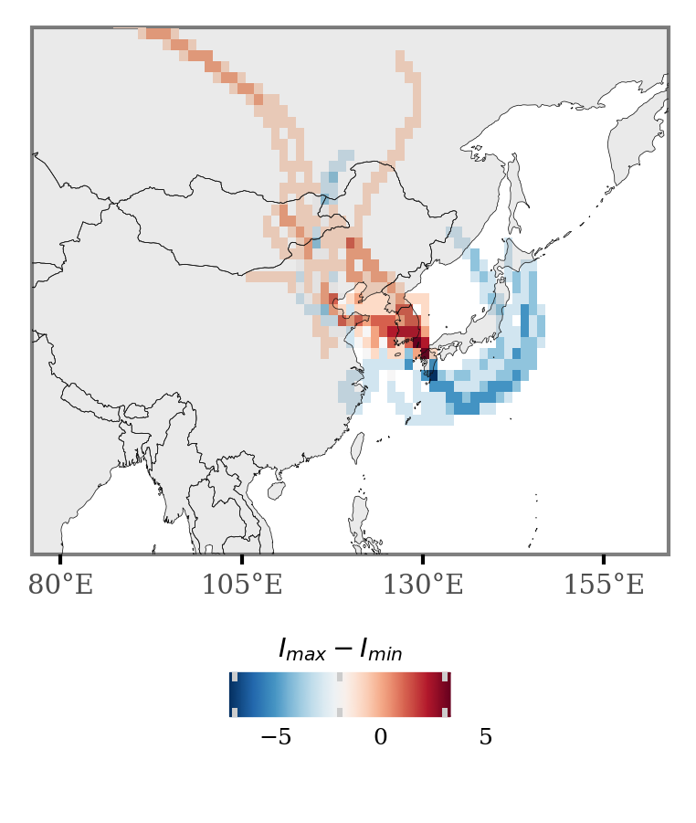
(grid_intersections
.groupby(['x', 'y', 'group'])
.size()
.rename('n')
.reset_index()
.merge(x_y_poly)
.assign(n=lambda dd: np.where(dd.group=='Minima', -dd.n, dd.n))
.assign(n=lambda dd: negative_log(dd.n))
.pipe(lambda dd: p9.ggplot(dd)
+ p9.geom_map(p9.aes(fill='n', geometry='cell'), size=0)
+ p9.geom_map(data=world, size=.1, alpha=.1)
+ p9.facet_wrap(['group'], ncol=2)
+ p9.theme(dpi=200, panel_grid=p9.element_blank(), figure_size=(4, 2),
axis_text=p9.element_text(size=5), strip_text=p9.element_text(size=7))
+ p9.labs(fill='')
+ p9.scale_fill_continuous('RdBu_r', limits=(-2, 2))
+ p9.scale_alpha_continuous(trans='sqrt')
+ p9.guides(fill=False, alpha=False)
+ p9.scale_x_continuous(labels=custom_format('{:0g}°E'), limits=(90, 160), breaks=[105, 130, 155])
+ p9.scale_y_continuous(labels=custom_format('{:0g}°N'), limits=(20, 65), breaks=[25, 40, 55]))
).draw().savefig('../output/figures/kumamoto_grids.pdf', bbox_inches='tight')
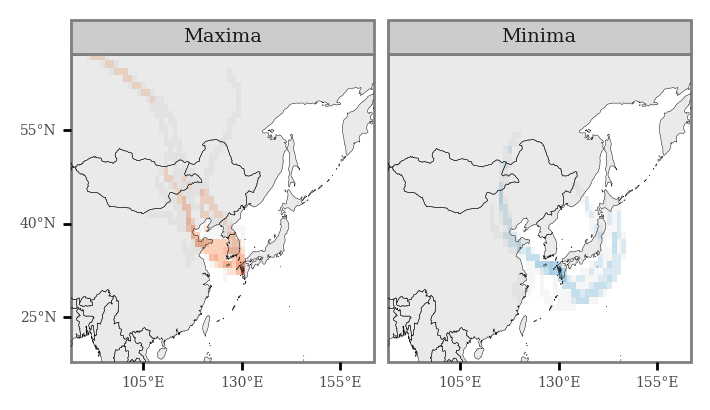
kd_kumamoto_2011 = (pd.read_excel('../data/kd_daily.xlsx')
.assign(date=lambda dd: pd.to_datetime(dd['Dates']))
.loc[lambda dd: (dd.date >= '2011') & (dd.date < '2012')]
.assign(cases=lambda dd: dd[43].astype(int))
[['date', 'cases']]
)
(p9.ggplot(kd_kumamoto_2011)
+ p9.aes('date', 'cases')
+ p9.annotate(geom='rect', ymin=-np.inf, ymax=np.inf, xmin=dates.min(), xmax=dates.max(), alpha=.7)
+ p9.annotate(geom='text', y=5.5, x=dates.median(), label='Sampled \n dates', size=5.5)
+ p9.geom_line(size=.3, alpha=1)
+ p9.scale_x_datetime(breaks=date_breaks('3 months'))
+ p9.theme(figure_size=(5, 2), title=p9.element_text(size=9), dpi=300)
+ p9.labs(x='', y='KD cases', title='Daily KD cases in Kumamoto (2011)')
)
All of Japan (2010-2016)¶
kd_ts = (pd.read_excel('../data/kd_daily.xlsx')
.assign(date=lambda dd: pd.to_datetime(dd['Dates']))
.assign(cases=lambda dd: dd['Japan'].astype(int))
[['date', 'cases']]
.loc[lambda dd: dd['date']>='2010']
)
(p9.ggplot(kd_ts)
+ p9.aes('date', 'cases')
+ p9.geom_line(size=.1)
+ p9.theme(figure_size=(6, 2))
+ p9.labs(x='', y='KD cases')
+ p9.scale_x_datetime(breaks=date_breaks('2 years'))
)
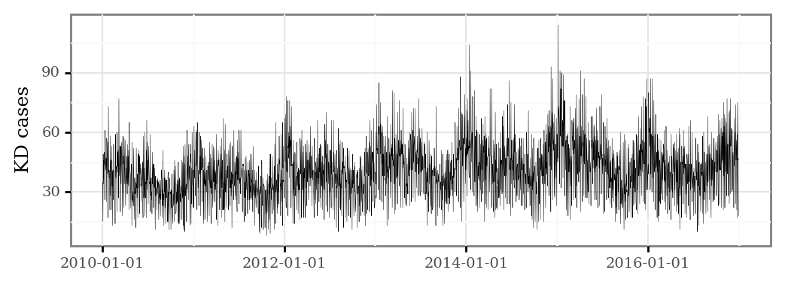
full_min_max_ts = (kd_ts
.sort_values('cases')
.reset_index(drop=True)
.assign(q=lambda dd: dd.index / dd.shape[0])
.sort_values('date')
.assign(group=lambda dd: dd.q.apply(lambda q: 'Maxima' if q >= .95 else ('Minima' if q <= .05 else pd.NA)))
.dropna()
)
(p9.ggplot(kd_ts)
+ p9.aes('date', 'cases')
+ p9.geom_rect(p9.aes(fill='group', ymin=-np.inf, ymax=np.inf,
xmin='date - pd.to_timedelta("12 h")', xmax='date + pd.to_timedelta("12 h")'),
inherit_aes=False, alpha=.8, data=full_min_max_ts)
+ p9.geom_line(size=.1)
+ p9.theme(figure_size=(6.5, 2), panel_grid=p9.element_blank())
+ p9.scale_fill_manual(['#B2182B', '#2166AC'])
+ p9.guides(fill=False)
+ p9.labs(x='', y='KD cases', fill='')
+ p9.scale_x_datetime(breaks=date_breaks('2 years'))
).draw().savefig('../output/figures/japan_kd_minmax.pdf', bbox_inches='tight')
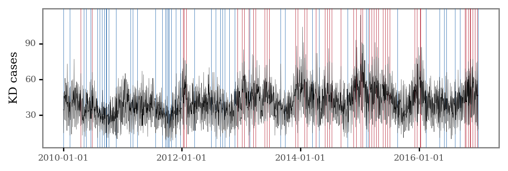
for year, month in product(range(2010, 2017), range(1, 13)):
pysplit.generate_bulktraj('tokyo',
hysplit_working=HYSPLIT_WORKING,
hysplit=HYSPLIT_DIR,
output_dir=f'{OUT_DIR}/japan',
meteo_dir=METEO_DIR,
years=[year],
months=[month],
meteoyr_2digits=True,
hours=[0, 6, 12, 18],
altitudes=[10],
coordinates=(35.68, 139.65),
run=-96,
meteo_bookends=([4, 5], [])
)
for date in full_min_max_ts.date:
date = str(date).replace('-', '').split(' ')[0]
for file in glob(f'../output/trajectories/japan/*{date}*'):
shutil.copy(file, '../output/trajectories/japan/min_max_dates/')
relevant_trajs = pysplit.make_trajectorygroup(glob('../output/trajectories/japan/min_max_dates/*'))
relevant_trajectories_data = (
pd.concat([t.data.assign(traj_id=i) for i, t in enumerate(relevant_trajs)])
.drop(columns=['Temperature_C', 'Temperature', 'Mixing_Depth'])
.assign(start_time=lambda dd: dd.DateTime - pd.to_timedelta(dd.Timestep, unit='h'))
.rename(columns={'start_time': 'date'})
.loc[lambda dd: dd.date.isin(full_min_max_ts.date)]
)
full_trajectory_lines = (relevant_trajectories_data
.groupby(['traj_id', 'date'], as_index=False)
['geometry']
.apply(lambda x: LineString([(i.x, i.y) for i in x.to_list()]))
.assign(date=lambda dd: pd.to_datetime(dd.date.dt.date))
.assign(hour=lambda dd: dd.date.dt.hour)
.merge(full_min_max_ts)
.pipe(gpd.GeoDataFrame)
)
full_trajectory_lines.groupby('group').size() / 4
group
Maxima 31.75
Minima 32.00
dtype: float64
(p9.ggplot(full_trajectory_lines)
+ p9.geom_map(p9.aes(color='group', fill='group'), alpha=.8)
+ p9.geom_map(size=.1, alpha=.1, data=world)
+ p9.labs(fill='', color='')
+ p9.scale_fill_manual(['#B2182B', '#2166AC'])
+ p9.scale_color_manual(['#B2182B', '#2166AC'])
+ p9.guides(fill=False, color=False)
+ p9.theme(title=p9.element_text(size=9), panel_grid=p9.element_blank(), figure_size=(3, 2.5),
plot_background=p9.element_blank())
+ p9.scale_x_continuous(labels=custom_format('{:0g}°E'), limits=(80, 160), breaks=[80, 105, 130, 155])
+ p9.scale_y_continuous(labels=custom_format('{:0g}°N'), limits=(15, 65), breaks=[25, 40, 55])
).draw().savefig('../output/figures/japan_min_max_trajectories.pdf', bbox_inches='tight')
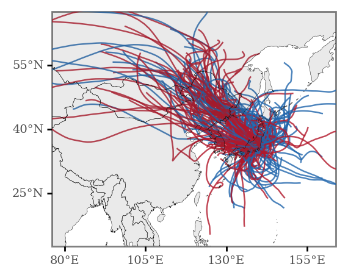
margin = 1
xmin, ymin, xmax, ymax = full_trajectory_lines.total_bounds.round() + [-margin, -margin, margin, margin]
n_cells = 180
cell_size = (xmax - xmin) / n_cells
grid_cells = []
for x0 in np.arange(xmin, xmax + cell_size, cell_size ):
for y0 in np.arange(ymin, ymax + cell_size, cell_size):
# bounds
x1 = x0 - cell_size
y1 = y0 + cell_size
grid_cells.append(shapely.geometry.box(x0, y0, x1, y1))
grid = (gpd.GeoDataFrame(grid_cells, columns=['geometry'])
.assign(cell=lambda dd: dd.geometry)
.assign(x=lambda dd: dd.cell.centroid.x, y=lambda dd: dd.cell.centroid.y)
)
x_y_poly = grid[['x', 'y', 'cell']].drop_duplicates()
grid_intersections = gpd.sjoin(full_trajectory_lines, grid, op='intersects')
(grid_intersections
.groupby(['x', 'y', 'group'])
.size()
.rename('n')
.reset_index()
.merge(x_y_poly)
.assign(n=lambda dd: np.where(dd.group=='Minima', -dd.n, dd.n))
.assign(n=lambda dd: negative_log(dd.n))
.pipe(lambda dd: p9.ggplot(dd)
+ p9.geom_map(p9.aes(fill='n', geometry='cell'), size=0)
+ p9.geom_map(data=world, size=.1, alpha=.1)
+ p9.facet_wrap(['group'], ncol=1)
+ p9.theme(dpi=300, panel_grid=p9.element_blank(), figure_size=(2, 3),
axis_text=p9.element_text(size=5), strip_text=p9.element_text(size=7))
+ p9.labs(fill='')
+ p9.scale_fill_continuous('RdBu_r', limits=(-2.2, 2.2))
+ p9.scale_alpha_continuous(trans='sqrt')
+ p9.guides(fill=False, alpha=False)
+ p9.scale_x_continuous(labels=custom_format('{:0g}°E'), limits=(90, 160), breaks=[105, 130, 155])
+ p9.scale_y_continuous(labels=custom_format('{:0g}°N'), limits=(20, 65), breaks=[25, 40, 55]))
).draw().savefig('../output/figures/japan_minmax_grids.pdf', bbox_inches='tight')
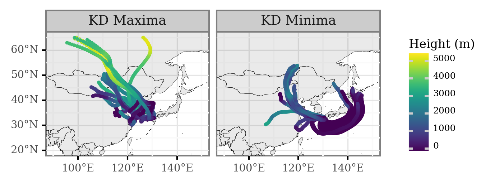
(grid_intersections
.groupby(['x', 'y', 'group'])
.size()
.rename('n')
.reset_index()
.pivot(['x', 'y'], 'group', 'n')
.fillna(0)
.assign(diff=lambda dd: dd['Maxima'] - dd['Minima'])
.assign(fc=lambda dd: np.log2(dd['Maxima'] / dd['Minima']))
.sort_values('diff')
.reset_index()
.merge(x_y_poly)
.assign(total_n=lambda dd: dd['Maxima'] + dd['Minima'])
.loc[lambda dd: dd.total_n >= 4]
.sort_values('fc')
.pipe(lambda dd: p9.ggplot(dd)
+ p9.geom_map(p9.aes(fill='diff', geometry='cell'), size=.0)
+ p9.geom_map(data=world, size=.1, alpha=.1)
+ p9.scale_fill_continuous('RdBu_r', limits=(16, -16))
+ p9.scale_alpha_continuous(trans='log10')
+ p9.theme(dpi=300, panel_grid=p9.element_blank(), plot_background=p9.element_blank(),
legend_background=p9.element_blank(), legend_key_size=8,
legend_text=p9.element_text(size=6, va='bottom', ha='center'), legend_title_align='center',
legend_title=p9.element_text(size=7), figure_size=(3, 2.5), legend_position='bottom',
axis_text_y=p9.element_blank(), axis_ticks_major_y=p9.element_blank())
+ p9.labs(fill='$I_{max} - I_{min}$')
+ p9.scale_x_continuous(labels=custom_format('{:0g}°E'), limits=(80, 160), breaks=[80, 105, 130, 155])
+ p9.scale_y_continuous(labels=custom_format('{:0g}°N'), limits=(15, 65), breaks=[25, 40, 55])
)).draw().savefig('../output/figures/japan_max_minus_min.pdf', bbox_inches='tight')
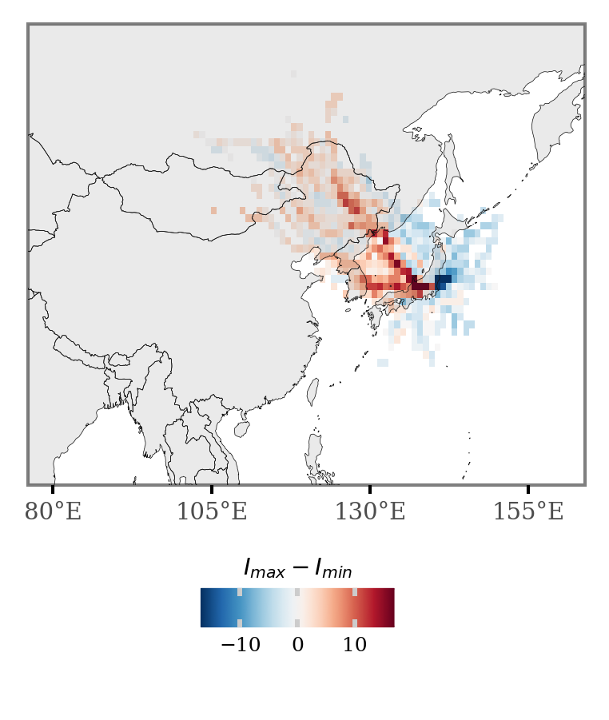
LIDAR and SWC plots¶
absc_df = (pd.read_csv('../data/absc532_1064_TKB_TKO_TYM_2010_16.csv')
.assign(date=lambda dd: pd.to_datetime(dd.date))
)
swc_df = (pd.read_csv('../data/subweekly_TW84_absc532_1064_TKB_TKO_TYM_2010_16.csv')
.rename(columns={'DatesH': 'date'})
.assign(date=lambda dd: pd.to_datetime(dd['date']))
)
(swc_df
.set_index('date')
.melt(ignore_index=False)
.fillna(0)
.pipe(lambda dd: p9.ggplot(dd)
+ p9.aes('dd.index', 'variable', fill='value')
+ p9.geom_tile()
+ p9.scale_x_datetime(breaks=date_breaks('2 year'))
+ p9.scale_fill_continuous('plasma', breaks=[.2, .5, .8])
+ p9.labs(x='', y='LIDAR Station', title='Synchrony between Absc$_{532}$ at 4.3-6 km and 0.1-0.6 km ', fill='$r$')
+ p9.theme(figure_size=(5, 1),
dpi=300,
legend_key_size=7,
axis_ticks_major_x=p9.element_blank(),
axis_text_x=p9.element_blank(),
legend_text=p9.element_text(size=6, va='bottom'),
panel_grid=p9.element_blank(),
title=p9.element_text(size=8)))
)
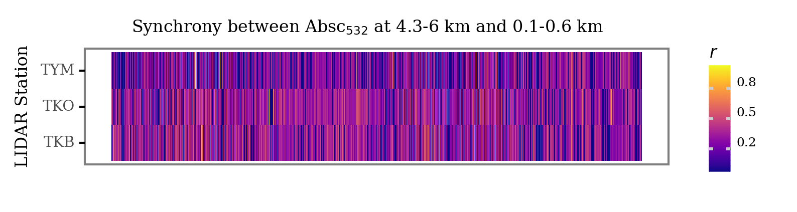
swc_presence = swc_df.set_index('date') > .5
(swc_presence
.melt(ignore_index=False)
.pipe(lambda dd: p9.ggplot(dd)
+ p9.aes('dd.index', 'variable', fill='value')
+ p9.geom_tile()
+ p9.scale_x_datetime(breaks=date_breaks('2 year'))
+ p9.scale_fill_manual(['white', 'black'])
+ p9.guides(fill=False)
+ p9.labs(x='Date', y='LIDAR Station', title='Presence of SWC (r > .5)')
+ p9.theme(figure_size=(5, 1),
dpi=300,
panel_grid=p9.element_blank(),
title=p9.element_text(size=8)))
)
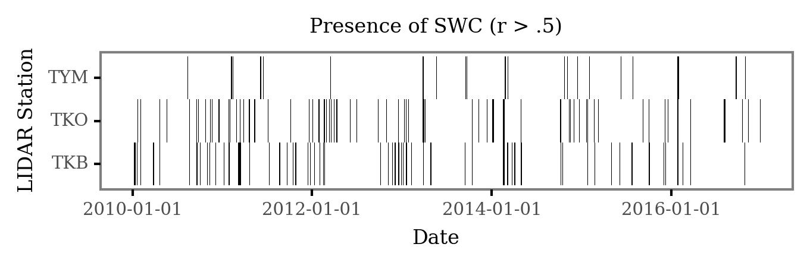
swc_presence = swc_df.set_index('date') > .4
(swc_presence
.melt(ignore_index=False)
.pipe(lambda dd: p9.ggplot(dd)
+ p9.aes('dd.index', 'variable', fill='value')
+ p9.geom_tile()
+ p9.scale_x_datetime(breaks=date_breaks('2 year'))
+ p9.scale_fill_manual(['white', 'black'])
+ p9.guides(fill=False)
+ p9.labs(x='Date', y='LIDAR Station', title='Presence of SWC (r > .4)')
+ p9.theme(figure_size=(5, 1),
dpi=300,
panel_grid=p9.element_blank(),
title=p9.element_text(size=8)))
)
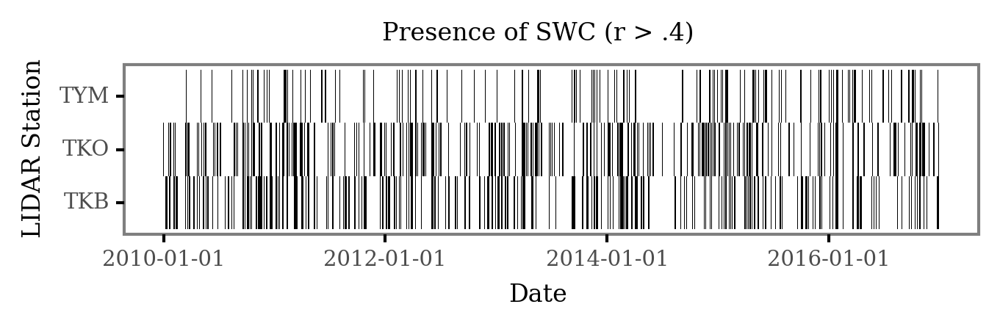
(absc_df
.set_index('date')
.melt(ignore_index=False)
.assign(station=lambda dd: dd.variable.str[-3:])
.assign(wavelength=lambda dd: dd.variable.str[4:-4].astype(int))
.loc[lambda dd: dd.wavelength==532]
.pipe(lambda dd: p9.ggplot(dd)
+ p9.aes('dd.index', 'value')
+ p9.facet_grid('station ~ .', scales='free_y')
+ p9.scale_x_datetime(breaks=date_breaks('2 year'))
+ p9.geom_line()
+ p9.labs(x='Date', y='absc532')
+ p9.theme(figure_size=(5, 2.5), axis_text_y=p9.element_text(size=6))
)
)
absc_df_long = (absc_df
.set_index('date')
.melt(ignore_index=False)
.assign(station=lambda dd: dd.variable.str[-3:])
.assign(wavelength=lambda dd: dd.variable.str[4:-4].astype(int))
.loc[lambda dd: dd.wavelength==532]
)
(absc_df_long.pipe(lambda dd: p9.ggplot(dd)
+ p9.aes('dd.index', 'value')
+ p9.facet_grid('station ~ .', scales='free_y')
+ p9.scale_x_datetime(breaks=date_breaks('2 year'))
+ p9.geom_line(size=.25)
+ p9.labs(x='Date', y='Absc$_{532}$')
+ p9.theme(figure_size=(5, 2.5),
axis_text_y=p9.element_text(size=6),
dpi=300)
)
)
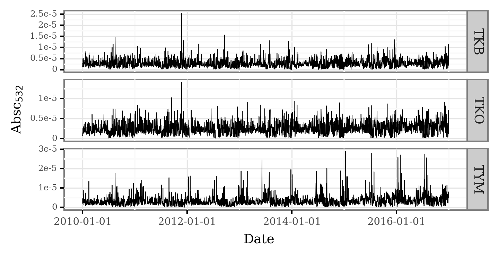
monthly_swc = (swc_df
.set_index('date')
.apply(lambda x: x > .5)
.resample('M')
.mean()
.melt(ignore_index=False)
.assign(date=lambda dd: dd.index - pd.to_timedelta('14 days'))
)
(monthly_swc
.pipe(lambda dd: p9.ggplot(dd)
+ p9.aes('date', 'value')
+ p9.geom_col(fill='black')
+ p9.facet_grid('variable ~ .')
+ p9.scale_x_datetime(breaks=date_breaks('2 year'))
+ p9.labs(x='Date', y='Rate of days with SWC')
+ p9.scale_y_continuous(labels=percent_format(), breaks=[.05, .15, .25])
+ p9.theme(figure_size=(5, 2.5),
axis_text_y=p9.element_text(size=6),
axis_title=p9.element_text(size=8),
panel_grid=p9.element_blank(),
dpi=300)
)
)

%load_ext rpy2.ipython
%%R
library(dplyr)
library(ggplot2)
absc_df_long = absc_df_long.reset_index()
monthly_swc = monthly_swc.rename(columns={'variable': 'station'})
%%R -i absc_df_long -i monthly_swc -w 1600 -h 900 -r 300
coef <- 1.5e4
# library(extrafont)
# font_import('Serif')
f <- ggplot(absc_df_long) +
aes(date, value) +
theme_bw() +
scale_y_continuous(name='Absc532',
# limits=c(0, .00004),
sec.axis=sec_axis(trans=~.*coef, name='Rate of days with SWC', breaks=c(0, .1, .2, .3), labels=scales::percent)) +
geom_col(aes(date, y=value / coef), fill='#AE4D4D', data=monthly_swc) +
geom_line(size=.3, alpha=.8) +
facet_wrap('station', ncol=1) +
labs(x='Date') +
theme(axis.title.y.right = element_text(color = '#AE4D4D', size=9),
axis.title.y.left = element_text(size=9),
axis.title.x = element_text(size=10),
panel.grid=element_blank(),
axis.text=element_text(size=6),
text=element_text(family='Serif'),
strip.text = element_text(size=9),
strip.background = element_rect(size=.0, color=NA, fill=NA))
ggsave('../output/figures/combi_swc_absc.pdf', f, device=cairo_pdf)
f
R[write to console]: Saving 5.33 x 3 in image
(absc_df
.set_index('date')
.melt(ignore_index=False)
.assign(station=lambda dd: dd.variable.str[-3:])
.assign(wavelength=lambda dd: dd.variable.str[4:-4].astype(int))
.loc[lambda dd: dd.wavelength==532]
.reset_index()
.groupby('station')
.apply(lambda dd: dd.assign(value=dd.value / dd.value.max()))
.reset_index(drop=True)
.pipe(lambda dd: p9.ggplot(dd)
+ p9.aes('date', 'station', fill='value')
+ p9.scale_x_datetime(breaks=date_breaks('2 year'))
+ p9.geom_tile()
+ p9.labs(x='Date', y='LIDAR station', fill='Absc$_{532}$')
+ p9.scale_fill_continuous('plasma')
+ p9.theme(figure_size=(5, 1),
axis_text_y=p9.element_text(size=6),
legend_key_size=7,
legend_title=p9.element_text(size=8),
panel_grid=p9.element_blank(),
axis_title=p9.element_text(size=7),
legend_text=p9.element_text(size=6, va='bottom'),
dpi=300)
)
)
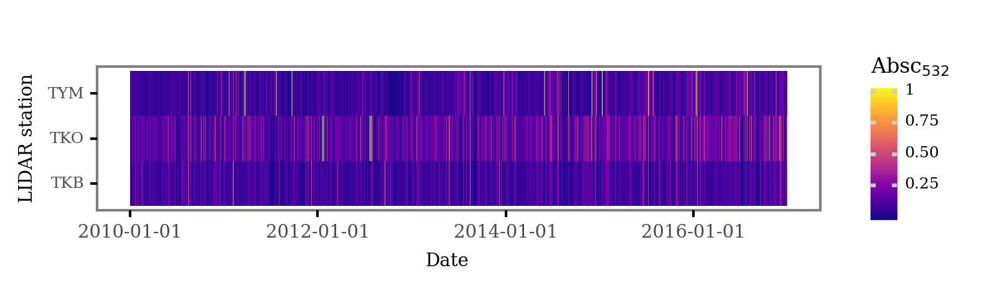